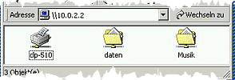
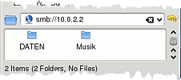

QEMU
Dieser Artikel wurde für die folgenden Ubuntu-Versionen getestet:
Ubuntu 16.04 Xenial Xerus
Ubuntu 14.04 Trusty Tahr
Zum Verständnis dieses Artikels sind folgende Seiten hilfreich:
QEMU  ist ein freier Emulator und Virtualisierer. Mit ihm ist es möglich, ein anderes Betriebssystem in einem Fenster zu booten und so zu benutzen, als sei es normal gestartet worden. Eine grundsätzliche Einführung zu diesem Thema findet man im Artikel Virtualisierung.
ist ein freier Emulator und Virtualisierer. Mit ihm ist es möglich, ein anderes Betriebssystem in einem Fenster zu booten und so zu benutzen, als sei es normal gestartet worden. Eine grundsätzliche Einführung zu diesem Thema findet man im Artikel Virtualisierung.
Einige Merkmale von QEMU sind:
läuft in Kombination mit KVM fast mit nativer Geschwindigkeit
kann bis zu vier virtuelle Festplatten einbinden
man benötigt für den Gast keine Gasterweiterungen (wie bei VirtualBox oder VMware notwendig)
sehr viele Optionen zum Starten des Gastsystems, wie z.B. Multiprozessor-Emulation auch bei Einprozessor-Systemen
kann auch andere Prozessorarchitekturen wie z.B. PowerPC oder ARM emulieren
QEMU ist auch für andere Plattformen wie Windows und MacOS erhältlich.
Installation¶
QEMU wird in Kombination mit KVM „geliefert“ und kann durch folgendes Paket installiert [1] werden:
qemu-system-x86
 mit apturl
mit apturl
Paketliste zum Kopieren:
sudo apt-get install qemu-system-x86
sudo aptitude install qemu-system-x86
Dieses Paket enthält allerdings „nur“ die Emulation von x86-Maschinen (32- und 64-Bit). Möchte man andere Hardware-Plattformen emulieren, so braucht man zusätzlich das Paket
qemu-system
mit apturl
Paketliste zum Kopieren:
sudo apt-get install qemu-system
sudo aptitude install qemu-system
Symlink¶
Danach muss noch eine Verknüpfung auf die gewünschte Standard-Systemarchitektur (typischerweise i386 bzw. x86_64) gesetzt werden:
sudo ln -s /usr/bin/qemu-system-ARCHITEKTUR /usr/bin/qemu
ARCHITEKTUR ist dabei durch die gewünschte Prozessorarchitektur zu ersetzen.
Grafische Oberflächen für QEMU¶
Dieser Artikel beschreibt die Einrichtung und Startparameter für QEMU ausschließlich über ein Terminal[3]. Der Vollständigkeit halber seien hier aber noch einige grafische Programme für QEMU aufgeführt, die den Einstieg in QEMU wesentlich erleichtern. Auch wenn sie für spezielle Desktopumgebungen entworfen wurden, sind sie natürlich auch unter anderen Umgebungen lauffähig.
qemu-launcher (universe)
qemulator (universe)
qemuctl (universe)
KDE:
qtemu (universe)
virsh bietet auch einige Funktionen des QEMU-Monitors
Geschwindigkeit¶
QEMU kommuniziert direkt mit dem Kernel, so dass das Gastsystem annähernd mit der Geschwindigkeit des Wirtssystems läuft. Wie man herausfindet, ob der Prozessor diese Hardwarevirtualisierung unterstützt, steht im Artikel KVM.
Installation eines Betriebssystems¶
Alle folgenden Befehle werden in einem Terminal [3] eingegeben.
Virtuelle Festplatte einrichten¶
Um ein Betriebssystem in einer Virtuellen Maschine installieren zu können, muss als erstes der Container (eine virtuelle Festplatte, angelegt als Datei) erstellt werden:
qemu-img create BOOTSYSTEM.img 10G
Anstatt BOOTSYSTEM sollte man einen geeigneten Namen wählen. In diesem Fall erstellt man einen 10 GB großen Container im raw-Format. Man kann die Größe des Containers auch in MiB angeben, also bezogen auf das obige Beispiel 10240M (10 * 1024) statt 10G.
Je nachdem, in welcher Art von Dateisystem dieser Container liegt, wächst die Datei ggf. erst dann dynamisch an, wenn tatsächlich Daten darin gespeichert werden. Damit ist sie anfangs 0 Bytes groß, auch wenn die meisten Programme (z.B.) 10 GiB zeigen. Dies ist z.B. bei einer typischen Ubuntu-Installation auf einem ext-Dateisystem der Fall (bezogen auf das Host-System; der Gast in der VM ist egal). Möchte man solche Sparse-Dateien auch auf älteren Dateisystemen nutzen oder andere Verbesserungen nutzen, so kann man ein anderes Format wie qed oder qcow2 angeben:
qemu-img create -f qcow2 BOOTSYSTEM.img 10G
Eine Übersicht über die möglichen Formate bietet qemu-buch.de  .
.
Installation von CD oder CD-Image¶
Wenn der Container erstellt ist, kann man nun ein Betriebssystem darin installieren. Es sollte dabei von vornherein bedacht werden, welche Arbeitsspeicher-Anforderungen (RAM) das zu installierende System hat. Entsprechend wird QEMU mit der Option -m SPEICHERGRÖSSE gestartet. Richtwerte können der Tabelle in Gastsystem entnommen werden.
Start des Installationsvorgangs mittels CD-ROM-Laufwerk, es wird dem Gastsystem 256 MiB Speicher zur Verfügung gestellt:
qemu-system-ARCHITEKTUR -enable-kvm -hda BOOTSYSTEM.img -cdrom /dev/cdrom -boot d -m 256
Das -boot d bedeutet, dass QEMU von CD-ROM booten soll. Wenn die Installations-CD als ISO-Image vorliegt, geht das analog dazu:
qemu-system-ARCHITEKTUR -enable-kvm -hda BOOTSYSTEM.img -cdrom DATEINAME.iso -boot d -m 256
Bei ARCHITEKTUR ist die festgelegte Standard-Architektur einzugefügen (für AMD64 lautet der Befehl beispielsweise qemu-system-x86_64)
Nach erfolgreicher Installation muss die Option -boot d weggelassen werden, damit anstatt vom CD-ROM-Laufwerk von der virtuellen Festplatte im Container gebootet wird. Ein ISO-Abbild (Abbild-Datei) beispielsweise einer Installations-DVD von Windows kann man mit einem Brennprogramm erstellen. QEMU kommt mit ISO-Images besser zurecht als mit DVDs.
Overlay-Images anlegen¶
QEMU bietet die Möglichkeit, mit Overlay-Dateien (übersetzt: "Überlagerungsdateien") zu arbeiten. Dabei werden neue und geänderte Daten nicht in die Original Imagedatei sondern in die Overlay-Datei geschrieben. Das original Image bleibt unverändert. Diese ist z.B. dann praktisch, wenn man eine "saubere" Grundinstallation eines Systems hat und "Experimente" mit dem Overlay-Image gemacht werden, welche sich nicht auf das Original auswirken. Ebenso kann man mehrere Overlays für ein Image anlegen.
Um ein Overlay-Image anzulegen dient folgender Befehl:
qemu-img create -b mein_image.img -f qcow2 mein_overlay.ovl
Der Name der Overlay-Datei kann dabei beliebig sein und muss nichts mit den Namen des Images zu tun haben. Danach kann man die virtuelle Maschine normal booten, nur dass anstatt des Images die Overlay-Datei als Festplatte angegeben werden muss, also z.B.
qemu -hda mein_overlay.ovl
Hinweis:
Die Overlay-Dateien sind "Delta-Images", d.h. in der Overlay-Datei werden Änderungen relativ zum Original Image gespeichert. Ändert man das zugrunde liegende Image, nachdem eine Overlay-Datei angelegt wurde, funktioniert die Overlay-Datei nicht mehr!
Es ist auch möglich, Änderungen der Overlay-Datei ins zugrunde liegende Image zu schreiben. Informationen hierzu findet man im QEMU-Handbuch .
Festplatten von Virtualbox in QEMU nutzen¶
Für den Fall, dass man bereits existierende virtuelle Festplatten im Virtualbox-Format .vdi nutzt, kann man diese für QEMU nutzbar machen.
VBoxManage clonehd /pfad/zur/virtualbox_platte/system.vdi /pfad/zur/kvm_platte/system.img --format raw
Je nach Größe des Abbildes kann die Konvertierung einige Zeit in Anspruch nehmen. Mehr Informationen über das Nutzen von Images anderer Virtualisierer und Emulatoren findet man im deutschsprachigen QEMU-Handbuch .
QEMU Umgebung¶
Während das Betriebssystem installiert wird, sollte man sich mit der Umgebung von QEMU etwas vertraut machen.
Tastenkombinationen¶
| Tastenkombination von QEMU | |
| Tasten | Erklärung |
| Strg + Alt | Maus aus dem QEMU-Fenster befreien |
| Strg + Alt + 2 | vom Gast in den QEMU-Monitor wechseln |
| Strg + Alt + 1 | vom QEMU-Monitor ins Gast-Betriebssystem wechseln |
| Strg + Alt + F | zwischen Fenster- und Vollbildmodus wechseln |
QEMU-Monitor¶
Der Monitor von QEMU (manchmal auch QEMU-Konsole genannt) bietet eine Reihe von Möglichkeiten zur Verwaltung und Steuerung der virtuellen Maschine. So kann hierüber auch der Wechsel von CD-ROM-Medien oder Disketten erfolgen.
Einige davon sind:
| Befehle für den QEMU-Monitor | |
| Befehl | Erklärung |
info GERÄT | gibt Infos über das virtuelle Gerät aus; mögliche Geräte sind u.a. block (Festplatte[n], CD-ROM), snapshot, usb und network |
change GERÄT GERÄTEDATEI | Tauscht ein Wechselmedium (CD/DVD, Diskette) aus (siehe: Wechseldatenträger) |
commit | schreibt einen Snapshot, sofern QEMU mit der Option -snapshot gestartet wurde |
screendump DATEI | erstellt ein Bildschirmfoto, wobei das recht ungewöhnliche Dateiformat ppm verwendet wird. Beispiel: screendump BILDNAME.ppm |
sendkey ctrl-alt-f1 | sendet die Tastenkombination Strg + Alt + F1 an das Gastsystem (ruft in einem Ubuntu-Gast die virtuelle Konsole auf) |
help [befehl] | zeigt eine Hilfe für alle Befehle oder nur für den Befehl befehl |
Eine vollständige Übersicht über die Befehle der QEMU-Konsole findet man im QEMU-KVM-Buch .
Wechseldatenträger¶
QEMU kann während der Virtualisierung nicht automatisch feststellen, ob eine CD oder Diskette eingelegt oder gewechselt wurde. Dies wird über den QEMU-Monitor erledigt. Im QEMU-Monitor erkundigt man sich über den Befehl info block zuerst, welche Geräte angeschlossen sind und wie sie heißen:
info block ide1-cd0: type=cdrom removable=1 locked=0 file=/dev/cdrom ro=0 drv=host_cdrom encrypted=0 ide0-hd0: type=hd removable=0 file=/PFAD/ZUM/CONTAINER.img ro=0 drv=qcow2 encrypted=0 ...
In diesem Beispiel heißt das CD-ROM-Gerät ide1-cd0 und die Gerätedatei /dev/cdrom. Entsprechend wird QEMU durch die Eingabe von
change ide1-cd0 /dev/cdrom
mitgeteilt, dass eine CD eingelegt/gewechselt wurde, und man kann mit dem Gastsystem darauf zugreifen. Bei dem Wechsel von Disketten müssen die Optionen entsprechend angepasst werden.
Netzwerk¶
Host¶
Der Host ist von einem Gastsystem aus über die IP-Adresse 10.0.2.2 erreichbar.
DHCP¶
Hat man sein Netzwerk per DHCP konfiguriert, sollten Internet und Netzwerk automatisch funktionieren.
QEMU legt allerdings für jede VM ein eigenes Netzwerk an. Es werden IP-Adressen aus dem Bereich 10.0.0.0/8 vergeben. Weiterhin befindet sich jede VM standardmäßig in einem eigenen Netz, sodass Anfragen ins Internet wie gewohnt funktionieren, die VMs sich aber weder untereinander sehen, noch mit physischen Geräten im LAN kommunizieren können. Unter Umständen kann es praktikabel sein, die VMs im gleichen Netz zu betreiben, wie die physischen Geräte. So werden dann beispielsweise die virtuellen Maschinen in die gleiche LAN-Infrastruktur und -Adressraum eingebunden wie die physischen Maschinen. Hierzu ist zunächst die Einrichtung einer Netzwerkbrücke erforderlich. Hierbei ist zu beachten, dass bei der Brücke nicht zwei Netzwerkkarten überbrückt werden (z.B. eth0 und wlan0) sondern nur die Netzwerkkarte, die am LAN angebunden ist. In der /etc/network/interfaces sind also etwa solche Zeilen einzutragen:
auto br0 iface br0 inet static address 192.168.1.200 network 192.168.1.0 netmask 255.255.255.0 broadcast 192.168.1.255 gateway 192.168.1.1 bridge_ports eth1 bridge_fd 9 bridge_hello 2 bridge_maxage 12 bridge_stp off
eth1 ist in diesem Fall die am LAN angeschlossene Schnittstelle. Die Adressen sind entsprechend den Gegebenheiten anzupassen.
Die Brücke bekommt statisch eine eigene IP-Adresse zugewiesen. Um Konflikte mit der automatischen Adressvergabe des DHCP-Servers zu vermeiden sollte man hier eine wählen, die sich zwar im gleichen Subnetz befindet, aber außerhalb des erlaubten Adressraums des DHCP-Servers liegt (im o.g. Beispiel vergibt der DHCP-Server nur Adressen von 192.168.1.1 bis 192.168.1.100).
Zu beachten ist, dass, wenn man einen Host mit grafischer Oberfläche betreibt, die Verwaltung der Netzwerkkarten u.U. dem Network-Applet der GUI obliegt. Das sollte man für den vorliegenden Fall abschalten, in dem man in der /etc/network/interfaces die für die am LAN angebundene Schnittstelle zuständigen Zeilen wie folgt anpasst:
1 2 3 | # The primary network interface auto eth1 iface eth1 inet dhcp |
Im Network-Applet sollte die entsprechende Schnittstelle dann als "wird nicht verwaltet" angezeigt werden.
Beim Starten der VM verwendet man dann das TUN/TAP interface anstelle dem user mode. Das bewerkstelligt man, in dem man das Start-Argument:
-net user (...)
durch ein folgendes ersetzt
-net tap,vlan=1,script="/etc/qemu-ifup"
Das Script sollte bereits an der entsprechenden Stelle vorhanden sein und etwa so aussehen:
1 2 3 4 5 6 7 8 9 10 11 12 13 14 15 16 17 18 19 | #!/bin/sh nic=$1 if [ -f /etc/default/qemu-kvm ]; then . /etc/default/qemu-kvm fi if [ -z "$TAPBR" ]; then switch=$(ip route list | awk '/^default / { print $5 }') if [ ! -d "/sys/class/net/${switch}/bridge" ]; then switch=virbr0 fi else switch=$TAPBR fi ifconfig $nic 0.0.0.0 up brctl addif ${switch} $nic |
Der Vollständigkeit halber hier noch mal ein komplettes Start-Script für eine Maschine:
1 2 3 | #!/bin/sh # This script created by AQEMU /usr/bin/qemu-system-x86_64 -smp 2 -cpu phenom -soundhw es1370 -k de -enable-kvm -m 3500 -localtime -hda "/media/raid_a/windows_7_x86.img" -boot once=c,menu=off -net nic,vlan=1,macaddr=00:c9:29:b8:7c:ee -net tap,vlan=1,script="/etc/qemu-ifup" -name "Windows 7 x86" $* |
Jetzt sollte die VM beim starten wie eine physische Maschine im LAN eingebunden werden und von überall her erreichbar sein; umgekehrt sollten auch alle Netzwerkressourcen aus dem LAN der VM zur Verfügung stehen.
statisch IP-Adressvergabe¶
Wer sein Netzwerk per statischer IP-Adressierung konfiguriert hat, muss ein paar kleinere Einstellungen vornehmen, um dem Gast den Internetzugang zu ermöglichen.
Als erstes wird die Netzwerkkonfiguration des Wirtssystems angepasst. Dazu muss man eine Netzwerkbrücke erstellen. Näheres ist unter Netzwerkbrücke zu finden.
Nachdem die Netzwerkbrücke eingerichtet ist, startet man die VMs mit folgenden zusätzlichen Parametern:
qemu -hda image.img -boot c -net nic,macaddr=00:00:00:00:00:00 -net tap
Bei macaddr muss eine gültige beliebige MAC-Adresse angegeben werden. Jede VM sollte mit einer anderen MAC-Adresse gestartet werden, da es sonst zu Problemen kommt. Jetzt kann man in den verschiedenen VMs ganz normal wie bei einem normalen Rechner das Netzwerk einrichten.
Zugriff vom Gast auf bestehende Daten¶
QEMU kann, bis auf eine Ausnahme, nicht ohne weiteres auf Partitionen oder Verzeichnisse des Wirtssystems zugreifen. Um die Daten des Wirtssystems lesen zu können, bedarf es ein wenig Vorbereitung. Jede Methode hat ihre Vor- und Nachteile.
Einzelne Dateien¶
Um einzelne Dateien auszutauschen, kann man die Tools tar und nc, sowie die Fähigkeit der Bash zum Netzwerkzugriff nutzen, sofern diese in Host und Gastsystem zur Verfügung stehen (z.B. beides Linux).
Dazu führt man jeweils einen Befehl in einem Terminal [3] aus:
# Host sendet an Gast tar c DATEIEN | nc -v -l 8080 # auf dem Host tar x < /dev/tcp/10.0.2.2/8080 # auf dem Gast # Gast sendet an Host nc -v -l 8080 | tar x # auf dem Host tar c DATEIEN > /dev/tcp/10.0.2.2/8080 # auf dem Gast
Partitions-Abbild¶
Per dd können ganze Partitionen in eine .img-Datei kopiert und als zweite Festplatte in QEMU eingebunden werden:
qemu -hda BOOTSYSTEM.img -hdb PFAD/ZUR/PARTITIONSKOPIE.img -m 256
Ausgesuchte Daten in einer Iso-Datei¶
Mit einem Brennprogramm können Verzeichnisse und Daten von verschiedenen Partitionen in einer ISO-Datei abgespeichert werden. Diese lässt sich als CD-ROM in QEMU einbinden:
qemu -hda BOOTSYSTEM.img -cdrom PFAD/ZUR/ISODATEI.iso -m 256
Datenaustauschpartition¶
Es ist auch möglich, QEMU direkt mit der Angabe einer Partition zu starten. Diese Partition unterliegt allerdings gewissen Einschränkungen:
Die Größe der Partition beträgt maximal 504 MiB
Sie muss mit Fat16 formatiert sein
Eingebunden wird sie beim Start von QEMU mit:
qemu -hda BOOTSYSTEM.img -hdb fat:EINHÄNGEPUNKT -m 256
Für einen (experimentellen) schreibenden Zugriff siehe /usr/share/doc/qemu/qemu-doc.html, Abschnitt "Virtual FAT disk images" (Online-Version ) und Wikibooks .
Zwei Probleme können dabei auftreten (Wirt: Ubuntu 8.04, Gast: Ubuntu 8.04):
Änderung an den Dateien im Wirtssystem wurden erst nach einem
unmountund einem erneutenmountsichtbar.Es trat der Fehler "exception Emask 0x0 SAct 0x0 SErr 0x0 action 0x2" auf und führte zum Einfrieren des Gastsystems. Die Lösung ist in Kommentar 25 von Bugreport #104581 beschrieben. Danach muss die Platte aber mit
/dev/hdb1eingebunden werden.
Per Samba¶
Ist im Host-System ein Sambaserver installiert, kann man mit QEMU auch auf dessen Freigaben per Netzwerk zugreifen:
Freigaben im Host-System einrichten. Sie müssen mit Lese- und Schreibrecht versehen sein.
Beim Aufruf von QEMU muss zusätzlich die Option
-net nic,vlan=0 -net user,smb=/path/to/local/dirverwendet werden:qemu -hda BOOTSYSTEM.img -m 256 -net nic,vlan=0 -net user,smb=/path/to/local/dir/
Der Zugriff vom Gast erfolgt über die URL
10.0.2.2:
|  |
| Windows |
|  |
| Ubuntu |
Optionen¶
Startoptionen¶
Unter den zahlreichen Startoptionen können besonders folgende nützlich sein:
| Optionen von QEMU | |
| Option | Erklärung |
-hda Datei | gibt das Image der primären Festplatte an. Weitere Platten können mit -hdb, -hdc und -hdd angegeben werden |
-fda Datei | gibt Diskettenlaufwerke an. Man kann das reale Diskettenlaufwerk verwenden, wenn man /dev/fd0 als Dateiname angibt |
-cdrom Datei | gibt das zu verwendende CD-Laufwerk an. Es kann ein Gerät wie /dev/cdrom oder eine Imagedatei angegeben werden |
-daemonize | löst den Qemu-Prozess vom Terminal; das Terminal kann nach dem Start ohne Beeinträchtigung geschlossen werden |
-boot Laufwerksbuchstabe | gibt an, von welchem Laufwerk gestartet werden soll. a steht für Diskette, c für Festplatte, d für CD-ROM und n für einen Netzwerk-Boot |
-m Speichergröße | gibt den zu verwendenden Arbeitsspeicher in MiB an. Vorbereitung dazu s.o. |
-usb | USB wird mit emuliert bzw. die Schnittstellen des Wirts stehen zur Verfügung. Mit -usb -usbdevice tablet kann der Mauszeiger sowohl im Gast- als auch im Host-System genutzt werden, ohne ständig mit
Strg +
Alt umschalten zu müssen |
-vga std | es wird eine generische VGA Karte emuliert; diese Option wird nur benötigt, wenn die Auflösung >= 1280x1024 sein soll / muss |
-soundhw KARTE | es wird die Soundkarte KARTE emuliert; zur Auswahl stehen: sb16, es1370 und all |
-smp X | es werden X CPU in der virtuellen Maschine genutzt, die Anzahl der virtuellen CPUs kann höher sein als die der realen des Wirts |
-vnc :X | Die Ausgabe des Bildschirms erfolgt per VNC auf Display X und nicht auf den normalen Bildschirm des Wirts, Details siehe auch hier |
-snapshot | Dies bewirkt, dass Änderungen nicht in das Festplattenimage geschrieben, sondern in einer temporären Datei gespeichert werden. Erst mit den Tasten Strg + Alt + S oder dem Kommando commit in der QEMU-Konsole werden die Änderungen übernommen |
-k XX | setzt das Tastaturlayout auf den angegebenen Wert XX z.B. -k de für deutsch, -k en für englisch, etc... (Hilfreich bei Problemen mit der Eingabe und Sonderzeichen in Verbindung mit VNC) |
-redir tcp:X::Y | Leitet die TCP-Verbindung von Port X des Wirtes auf den Port Y des Gastsystems um. D.h. -redir tcp:8008::80 macht einen Apache-Server (bei Standardkonfiguration) des Gastsystems unter http://localhost:8008 auf dem Wirt sichtbar. Oder -redir tcp:8022::22 erlaubt ssh-Zugriff (bei Standardkonfiguration) auf das Gastsystem vom Wirt via ssh -p 8022 localhost |
-no-quit | Deaktiviert die Fenster-Schließen-Option. Verhindert z.B., dass beim Drücken von
Alt +
F4 das Fenster geschlossen und die VM beendet wird, wenn die Kombination eigentlich für den Gast gedacht war (z.B. dort Fenster schließen oder zur 4. Virtuellen Konsole wechseln). QEMU kann weiterhin mit quit im QEMU-Monitor beendet werden |
-cpu X | Legt den Typ der CPU fest, mittels -cpu host kann die Host-CPU definiert werden (funktioniert nur in Verbindung mit aktiviertem KVM: -enable-kvm) |
Dies ist nur ein (sehr) kleiner Ausschnitt der Optionen. Besonders im Bereich der Netzwerk-Optionen gibt es sehr viele Möglichkeiten. Eine vollständige Übersicht findet man in den Manpages, in /usr/share/doc/qemu/qemu-doc.html oder im QEMU-Wiki .
Portforwarding (z.B. SSH)¶
Wie unter den Startoptionen aufgeführt, kann man Dienste vom Gast auf dem Host erreichen. Die alte Syntax wird in Zukunft wegfallen und wurde bereits parallel durch folgende ersetzt:
qemu [weitere Optionen] -hostfwd=::2222-10.0.2.20:22
In diesem Beispiel wird der Port 22 des Gastes auf den Port 2222 des Hosts weitergeleitet, um den Gast vom Host mit
ssh -p 2222 localhost
erreichen zu können.
Damit dies richtig funktioniert, muss die Option ggf. in den richtigen Netzwerkkontext eingebettet werden - standardmäßig ist das der sehr einfach zu benutzende, aber vergleichsweise sehr langsame und unflexible Modus user network (Benutzer-Netzwerk):
qemu [weitere Optionen] -net nic,macaddr=52:54:00:12:34:56 -net user,hostfwd=::2222-10.0.2.20:22
Die MAC-Adresse ist die standardmäßig voreingestellte mit 55 am Ende, um Eins erhöht, und kann weiter verändert bzw. die 56 weiter erhöht werden. Jede virtuelle Maschine im Netzwerk muss seine eigene, unverwechselbare MAC haben.
Andere Architekturen emulieren¶
QEMU ist nicht auf die Virtualisierung / Emulation von x86 Prozessoren beschränkt, es können auch eine Vielzahl von anderen Architekturen emuliert werden. Welche dies aktuell sind kann man hier nachschauen.
Die allgemeine Syntax ist
qemu-system-ARCHITEKTUR [OPTIONEN]
wobei ARCHITEKTUR entsprechend ersetzt werden muss.
Reine Prozessemulation¶
QEMU beherrscht auch die "reine" Prozessemulation, auch "User-Space-Emulation" genannt. D.h. dass anstatt eines kompletten Systems wird "nur" ein einzelnes Programm ("Binary") im Emulations-Modus ausgeführt. Die Prozess-Emulation für ein 32-bit i386 System wird z.B. mit folgendem Befehl aufgerufen:
qemu-i386 PROGRAMMNAME
Die Emulation funktioniert natürlich nur, wenn das Programm keine weiteren Bibliotheken dynamisch nachlädt.
Außer der i386-Emulation beherrscht QEMU u.a. auch die Prozessemulation für SPARC, PPC, ARM und einige mehr. Detaillierte Informationen findet man in der QEMU-Dokumenation .
QEMU per VNC¶
Wie weiter oben bereits erwähnt kann man die virtuelle Maschine auch so starten, dass diese per VNC (und nicht über den lokalen Rechner) erreichbar ist, eben mit der Option -vnc X, wobei X das Display ist. Startet man QEMU also z.B. über
qemu -hda image.img -vnc :1
so ist die virtuelle Maschine danach über einen VNC-Client via Port 5901 (5900 + Displaynummer) erreichbar.
Hinweis:
Die Verbindung läuft per Voreinstellung komplett unverschlüsselt und ohne Authentifizierung. Dies ist aber auch möglich; Details hierzu findet man an dieser Stelle auf der QEMU-Dokumentation.
Qemu unterstützt nativ auch über VNC keine Zwischenablage, das Projekt verweist dafür auf spice anstatt VNC. Dazu benötigt man die Pakete spice-client-gtk auf dem Hostsystem sowie spice-vdagent im Gastsystem. Weitere Konfigurationen von letzterem sind nötig und führten bisher beim Autor nicht zum Erfolg (bitte ergänzen, Ansatz unter Problemlösungen vorhanden).
QEMU-Festplattenimages unter Linux einbinden¶
Das Einbinden von QEMU-Images wird in der FAQ (toter Link) mit einem Link auf DmUserspace beantwortet. Damit lassen sich jedoch nur qcow-Partitionen mounten.
Informationen findet man z.B. unter qemu-buch.de .
Alternativ über NBD mounten¶
Qemu bietet die Möglichkeit, die Images über das Netzwerk anzubieten, dass lässt sich aber auch prima missbrauchen um sie auf dem eigenen Rechner einzubinden. Aber Achtung: Das Image darf dabei nicht von Qemu oder einem anderen Programm in Benutzung sein.
Zuerst muss NBD geladen werden:
sudo modprobe nbd
Sollte man sehr viele Partitionen im Image haben kann es nötig sein zusätzlich die Anzahl der Partitionen zu erhöhen:
sudo modprobe nbd max_part=63
Jetzt wird das Image in eine Art Loopdevice gemapped. pfad/zu/qemu.img muss man natürlich entsprechend anpassen und sollte /dev/nbd0 schon vergeben sein kann man auch diese Zahl anpassen.
sudo qemu-nbd --connect=/dev/nbd0 /kompletter/pfad/zu/qemu.img
Mit folgendem Befehl kann man sich die Partitionen anzeigen lassen:
sudo fdisk -l /dev/nbd0
Und so mountet man das Image:
sudo mount /dev/nbd0p1 /mnt
Wenn man fertig ist sollte man das Image wieder freigeben. Zahlen gegebenenfalls anpassen.
sudo umount /dev/nbd0p1 sudo qemu-nbd -d /dev/nbd0
USB Geräte durchreichen¶
Qemu ist in der Lage USB Geräte des Wirts zum Gast durchzureichen. Damit USB Unterstützung grundsätzlich funktionieren kann, muss die Startoption -usb angegeben werden. Es gibt zahlreiche Möglichkeiten ein USB Gerät an das Gastsystem durchzureichen. Dabei sind die folgenden zwei Methoden besonders praktikabel:
Angabe von "Vendor-" und "Product-ID" des betreffenden USB Geräts
Angabe von USB-Bus und Port des Wirts, an dem man beabsichtigt das USB Gerät anzuschließen
1. Methode¶
Die "Vendor-" und "Product-ID" mit
lsusb
ermitteln. Die Ausgabe enthält z.B eine Zeile wie folgt:
Bus 002 Device 026: ID 090c:1000 Silicon Motion, Inc. - Taiwan (formerly Feiya Technology Corp.) 64MB QDI U2 DISK
Dieser USB-Stick hat die "Vendor-ID" 090c und "Product-ID" 1000. Die Syntax für die entsprechende Startoption lautet:
qemu [OPTIONEN] -usb -usbdevice host:<vendor_id>:<product_id>
Im Qemu-Monitor macht man das mit:
usb_add host:<vendor_id>:<product_id>
Wenn alles gut gegangen ist, sollte sich das USB Gerät nun im Gast anmelden. Leider gibt es aber auch exotischere USB Geräte die sich so nicht zur Mitarbeit bewegen lassen. Unter Umständen wird die "Vendor-" und "Product-ID" nicht korrekt an das Gastsystem weitergereicht. In einem Windows XP Gast z.B. macht sich dieses Problem als "Unbekanntes Gerät" bemerkbar.
2. Methode¶
Verweigert ein USB Gerät die Mitarbeit oder möchte man prinzipiell einen ausgewählten USB-Port an einen Gast weiterreichen, dann kann man folgende Methode ausprobieren. Nach dem Anstecken kann mit:
dmesg | tail -n 20
der USB-Bus und Port des betreffenden Geräts ermittelt werden. Der interessante Teil der Ausgabe sieht dann z.B. so aus:
[29383.460263] usb 6-1: new full-speed USB device number 14 using uhci_hcd [29383.622414] usb 6-1: New USB device found, idVendor=10c4, idProduct=8044 [29383.622427] usb 6-1: New USB device strings: Mfr=1, Product=2, SerialNumber=3 [29383.622436] usb 6-1: Product: USB Debug Adapter [29383.622444] usb 6-1: Manufacturer: Silicon Laboratories [29383.622450] usb 6-1: SerialNumber: EC30000D370 [29385.340305] usb 6-1: reset full-speed USB device number 14 using uhci_hcd [29385.688125] usb 6-1: reset full-speed USB device number 14 using uhci_hcd
In diesem Fall hängt das Gerät also an USB-Bus 6 Port 1. Die Syntax für die entsprechende Startoption lautet:
qemu [OPTIONEN] -usb -device usb-host,bus=usb-bus.0,hostbus=<bus>,hostport=<port>
Dabei ist bus die soeben ermittelte USB-Bus Adresse und port der entsprechende USB-Port. Im Qemu-Monitor geht das so:
device_add usb-host,bus=usb-bus.0,hostbus=<bus>,hostport=<port>
Weiterführende Informationen dazu findet man im USB 2.0 Quick Start Dokument.

Problembehebung¶
Virtuelle Maschine bekommt nicht genug RAM¶
Startet man QEMU mit der Option -m XXX, aber die virtuelle Maschine bekommt trotzdem nicht genug Speicher, ist vielleicht das virtuelle Dateisystem unter /dev/shm bzw. ab Ubuntu 11.10 /run/shm zu klein. Dann kann man in der /etc/fstab folgende Ergänzung vornehmen (Verzeichnis ggfs. anpassen) [4]:
1 2 | # /dev/shm Vergrößern für QEMU none /dev/shm tmpfs defaults,size=528M |
Hier steht nun "size=528M" für 528 MiB. Dieser Wert muss ggf. angepasst werden und sollte etwas größer sein, als der tatsächlich für den Gast benötigte RAM, da unter /dev/shm noch weitere Daten abgelegt werden. Ohne neu booten zu müssen, kann man das tmpfs gleich neu einbinden [3]:
sudo mount -o remount /dev/shm
Wenn man nun QEMU startet, kann man mit dem Befehl
df | egrep 'shm|File'
überprüfen, wie viel des virtuellen RAM genutzt wird.
Hinweis:
Man sollte darauf achten, dass man QEMU nicht mehr RAM zuweist als dem Wirt-Rechner, da QEMU dann instabil laufen könnte. Außerdem sollte man dem Wirt-System genügend RAM lassen, dass es noch flüssig läuft. Die genauen Systemanforderungen kann man den Release Notes von Ubuntu und seinen Derivaten entnehmen. Die Untergrenze für RAM liegt bei 128-512 MiB.
gnome-terminal im Ubuntu-Gast hat Grafikfehler (Streifen)¶
Der unter Ubuntu als Host vorinstallierte vmware-Treiber schafft Abhilfe:
... -vga vmware ...
ping funktioniert auf dem Gast nach Installation nicht¶
Qemu startet einen Gast standardmäßig im Modus user network, welches keinen ping unterstützt.
Eine Alternative zu user network mit TUN/TAP interface wird im Abschnitt Netzwerk erklärt.
Alternativ zu ping kann man andere Tools zu verwenden, um auf dem Gast nach der Installation zu prüfen, ob Internetverbindung von Gast mit dem weltweiten Internet hergestellt wurde. Ein alternativer Befehl wäre:
wget -O - fsf.org 2>&1|grep free|wc
wobei die Ausgabe dann so oder ähnlich aussehen sollte:
27 269 2980
Ubuntu ist extrem langsam¶
Grafische Effekte brauchen ab Ubuntu 12.10 eine Grafikkarte mit 3D-Beschleunigung. Eine sehr schnelle Alternative ist mit dem Paket lubuntu-desktop (Lubuntu) erreichbar. Falls es Ubuntu sein soll, kann man versuchen, in CCSM einige grafische Effekte abzustellen sowie für ein allgemein flotteres Arbeiten die Auflösung des Gastes in den Systemeinstellungen herabzusetzen.
Desweiteren beschleunigt spice die Grafikausgabe erheblich, läuft aber eventuell nur unter Ubuntu als Gast frei von Darstellungsfehlern:
Installieren:
sudo apt-get install spice-client-gtk
Qemu mit spice-Passwort starten:
qemu -spice port=1511,password=123 ...
spicy starten (grafisch) und localhost auf Port 1511 eingeben, das Passwort wird nach Verbinden abgefragt:
spicy
Virtuelle Festplatte ist voll¶
Das Festplattenimage kann in zwei Schritten vergrößert werden. Zunächst wird die Imagedatei, die auf der realen Festplatte des Hosts liegt, vergrößert, z.B. um 10 GB:
qemu-img resize Pfad/zum/Image.img +10GB
Nun muss noch die Partition der virtuellen Festplatte vergrößert werden. Die geschieht wie die Imagevergrößerung einer echten Festplatte. Hierzu lädt man sich am Besten ein Iso von gparted herunter . Anschließend startet man die virtuelle Maschine vom Image aus, so wie man einen echten Rechner von einer CD aus starten würde:
qemu -hda Pfad/zum/Image.img -boot d -cdrom Pfad/zum/iso/gparted-live-0.14.0-1.iso -m 256
Nun wählt man zuerst die Sprache aus und wählt dann Option "(1)", den Xserver starten. Jetzt lässt sich die Größe der Partition bequem grafisch an die neue virtuelle Festplattengröße anpassen. Zum Starten muss lediglich das Icon von gparted angeklickt werden.
Die Maus und/oder die Tastatur funktioniert nicht¶
Wenn es sich um ein USB-Gerät handelt, empfiehlt es sich, folgende zwei Optionen zu verwenden:
-usb -usbdevice tablet
Mauszeiger ist nicht sichtbar¶
Beim Ausprobieren von einer Ubuntu Live-DVD als Gast kann es vorkommen, dass der Mauszeiger zwar funktiniert aber im Gast System nur nicht sichtbar ist. Mögliche Lösung: im Gast System ein Terminal starten den Mauszeiger darüber führen. Der Mauszeiger ist nun sichtbar, das Terminal kann geschlossen werden. (Quelle: https://bugs.launchpad.net/ubuntu/+source/qemu/+bug/1285508 )
Links¶
Anleitung auf Linuxforen.de
- Eine umfangreiche Einführung QEMU User-Dokumentation
- Die offizielle Dokumentation; auch unter /usr/share/doc/qemu/qemu-doc.htmlQEMU-Buch
- Sehr gute AnleitungBochs
- Ein weiterer freier Plattform-EmulatorGuide to running Windows 7 in QEMU
- Anleitung aus 2013 für Arch Linux. Leicht verständlich und knapp, funktioniert genauso gut unter UbuntuAnleitung im OpenMoko-Wiki für QEMU
- Das Betriebssystem OpenMoko unter QEMUWindows XP under QEMU HowTo
- Dokumentation von Ubuntu.com
- Erstellt mit Inyoka
-
 2004 – 2017 ubuntuusers.de • Einige Rechte vorbehalten
2004 – 2017 ubuntuusers.de • Einige Rechte vorbehalten
Lizenz • Kontakt • Datenschutz • Impressum • Serverstatus -
Serverhousing gespendet von